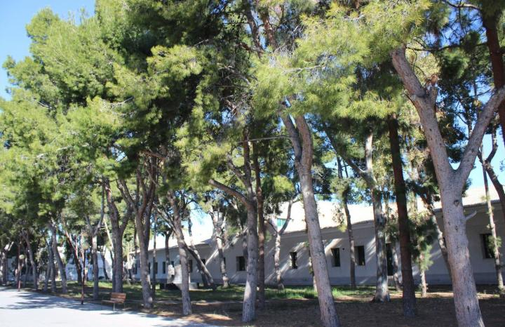
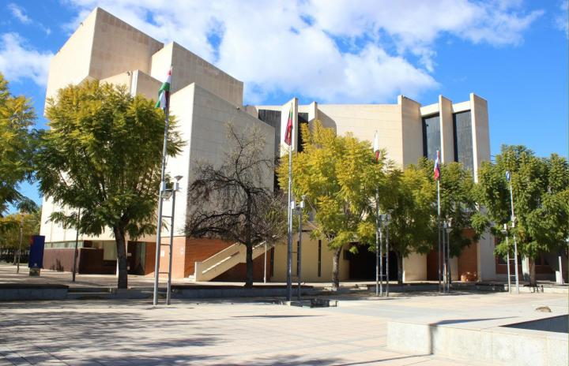
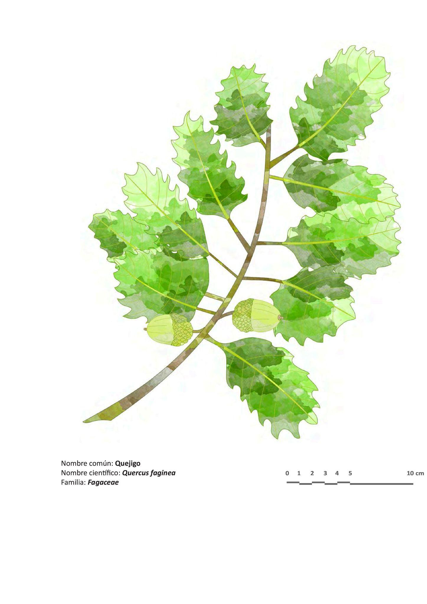

PARADA 5: PLAZA DE EUROPA
Desde la parada 4 nos vamos a dirigir hacia la Plaza de Europa. En el recorrido pasamos por la Pinada de los cuentos. En la actualidad, esta zona es peatonal pero en los años setenta se permitía el paso de tráfico rodado.
Se denomina así porque se han realizado actividades culturales de cuentacuentos en esta área.
La especie vegetal dominantes es el pino de Alepo o pino carrasco (Pinus halepensis) http://herbarivirtual.uib.es/ca/general/441/especie/pinus-halepensis-miller
Hay especies exóticas o alóctonas como:
Eucaliptus globulus (https://www.arbolesibericos.es/genre/eucalyptus/species/eucalyptusglobulus)
Casuarina equisetifolia
(https://www.arbolesibericos.es/genre/casuarina)

web.ua.es/es/ecocampus/imagenes/biodiversidad/flora/senda-paisajistica/19-pinada-cuentos.jpg
Nos dirigimos hacia el edificio de la Facultad de Derecho. Podemos observar que la especie vegetal utilizada para los setos del aparcamiento es el lentisco o Pistacia lentiscus (http://herbarivirtual.uib.es/ca/general/211/especie/pistacia-lentiscus-l-) muy característica del matorral mediterráneo termófilo o garriga.
A nuestra izquierda, junto al edificio de ciencias podemos observar unos chopos o Populus alba var boleana (https://www.arbolesibericos.es/genre/populus/species/populusalba), especie característica de ríos o cursos de agua.
Llegamos a la Plaza de Europa. En ella destaca el quejigo o gal.ler, Quercus faginea, http://herbarivirtual.uib.es/ca/general/2128/especie/quercus-faginea-lam-subsp-faginea, árbol caducifolio, característico del bosque mixto mediterráneo, junto a la carrasca, de las montañas alicantinas del norte de la provincia. Este árbol fue plantado por el Presidente de la Comisión Europea, Jacques Santer, Doctor Honoris Causa por la UA en 1995, quien inauguró también este espacio. Fíjate bien en sus hojas para luego diferenciarlo de la carrasca.

https://web.ua.es/es/ecocampus/imagenes/biodiversidad/flora/senda-paisajistica/14-plaza-europa.jpg

Más información en:
{kind=link}
{kind=link}